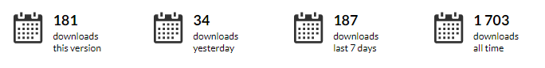

Steven Blowers
Software Development Engineer

Creating a Microsoft SQL Server Adaptor for Ecto 2.0
Deliver Fast!
- Only SQL Server features we needed
- Compose existing technology


MSSQLEX
DB_CONNECTION
A behaviour module for implementing efficient database connection client processes, pools and transactions.

MSSQL_ECTO
Creating Ecto Adapters
by Michał Muskała
http://michal.muskala.eu/2015/07/07/creating-ecto-adapters.htmlEcto Adapters Docs
Ecto Integration Tests
The Project Today
Hex Downloads
Ecto Readme
Phoenix v1.3.0
$ mix phx.new --database mssql
The Project Tomorrow
Erlang ODBC